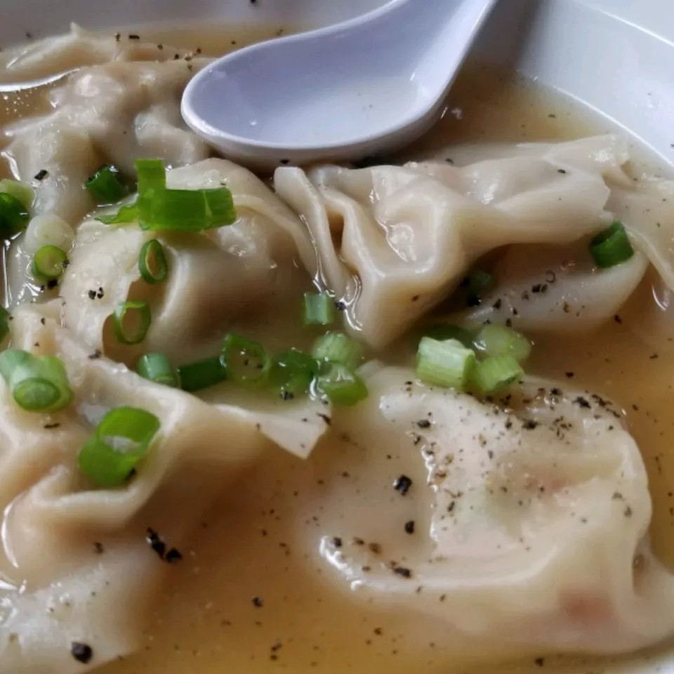

Wonton Soup

Description
Wonton soup is a simple, light, Chinese classic with pork-filled dumplings in seasoned chicken broth. Whether in soup or fried, wontons always add delicious, hearty flavor to any dish!
Ingredients:
Original recipe (1X) yields 6 servings
- Wontons:
- ½ pound boneless pork loin, coarsely chopped
- 2 ounces peeled shrimp, finely chopped
- 1 tablespoon Chinese rice wine
- 1 tablespoon light soy sauce
- 1 teaspoon brown sugar
- 1 teaspoon finely chopped green onions
- 1 teaspoon chopped fresh ginger root
- 24 (3.5 inch square) wonton wrappers
- Soup:
- 3 cups chicken stock
- 2 tablespoons finely chopped green onions
Steps:
- Make the wontons: Mix pork, shrimp, rice wine, soy sauce, brown sugar, green onions, and ginger together in a large bowl until well combined. Let stand for 25 to 30 minutes.
- Spoon about 1 teaspoon filling onto the center of a wonton wrapper. Moisten all four wrapper edges with water and fold over filling to make a triangle; press the edges firmly to seal. Bring left and right corners together above filling; overlap the tips of these corners, moisten with water, and press together to seal. Repeat until all wrappers have been filled and sealed.
- Make the soup: Bring chicken stock to a rolling boil in a pot. Gently drop in wontons and cook for 5 minutes.
- Ladle into bowls and garnish with green onions.
To Fry Wontons
Heat 2 to 3 cups oil in a wok until hot. Deep-fry wontons in batches in hot oil until golden, 2 to 3 minutes per side. Drain on a paper towel-lined plate. Serve with duck sauce (plum sauce) or any dipping sauce.